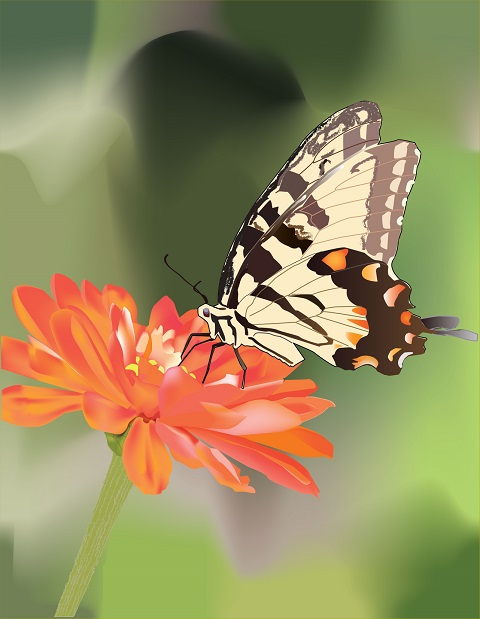
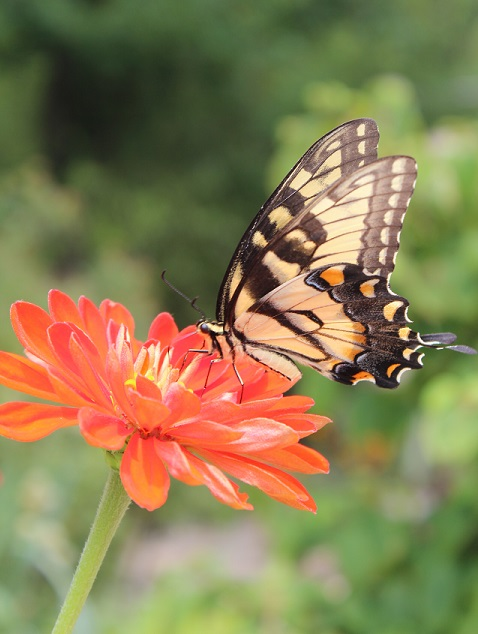

Recreate Photo
Original Photo
For this assignment I have to choose one photo, I decided to pick one of mine to recreate it. I used pen tool to outline the objects and using gradient tool and different brushes draw the the objects. Also I used eye drop tool to pick up the same colors as at the photo. But the most helpfull tool for me was mesh tool, which helps me to add more gradient colors for background and for flower to make them more realistic. It was not hardest assignment, but it took a lot of hours to recreate the photo.